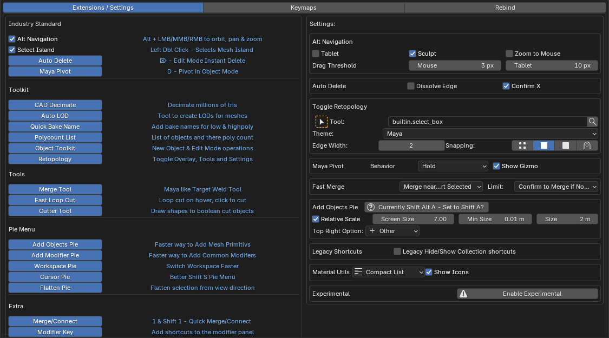
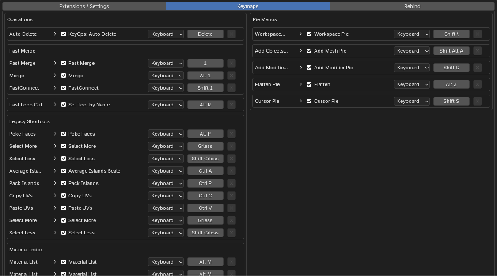
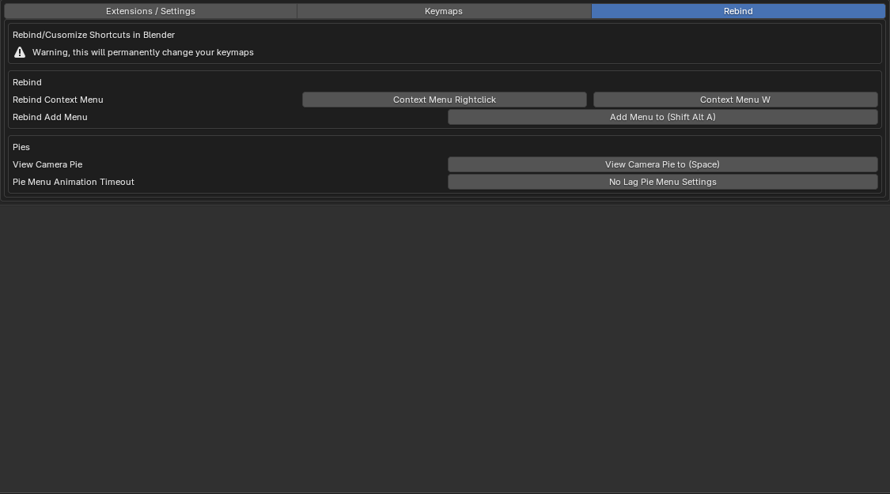

Preferences
Edit › Preferences › Add-ons › Key Ops: Toolkit, or Prefs in the Toolkit panel.
Extensions / Settings
Turn each feature on or off. Settings for enabled features show on the right.

Details
Click a feature's description to open its docs. No restart needed.
Keymaps
Change any of the add-on's shortcuts.

Details
Defaults are on the Shortcut Cheat Sheet.
Rebind
One-click changes to Blender's own keymap.

Details
- Context Menu: right-click or W.
- Add Menu: Add Objects Pie on Shift A.
- View Camera Pie: View pie on Space.
- No Lag Pie: removes the pie animation delay.
These edit Blender's keymap and stay after the add-on is disabled. Each has a reset button.
Experimental
Use with careShows work-in-progress features: Utility Pie, UV Pies and Maya Pivot in Edit Mode.